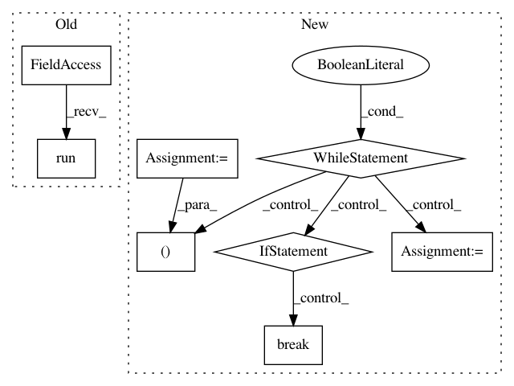

6e5cf676b113af8d70e34224f23bc8eace618856,mloop/nnlearner.py,SingleNeuralNet,fit,#SingleNeuralNet#Any#Any#,120
Before Change
})
self.log.debug("Fit neural network with total training cost "
+ str(self.tf_session.run(
self.loss_func,
feed_dict={self.input_placeholder: params,
self.output_placeholder: [[c] for c in costs],
self.regularisation_coefficient_placeholder: self.regularisation_coefficient,
}))
+ ", with unregularized cost "
+ str(self.tf_session.run(
self.loss_func,
After Change
// - train for train_epochs epochs
// - if the new loss is greater than the threshold then we haven"t improved much, so stop
// - else start from the top
while True:
threshold = 0.8 * self._loss(params, costs)[0]
for i in range(self.train_epochs):
// Split the data into random batches, and train on each batch
indices = np.random.permutation(len(params))
for j in range(math.ceil(len(params) / self.batch_size)):
batch_indices = indices[j * self.batch_size : (j + 1) * self.batch_size]
batch_input = [params[index] for index in batch_indices]
batch_output = [[costs[index]] for index in batch_indices]
self.tf_session.run(self.train_step,
feed_dict={self.input_placeholder: batch_input,
self.output_placeholder: batch_output,
self.regularisation_coefficient_placeholder: self.regularisation_coefficient,
self.keep_prob_placeholder: self.keep_prob,
})
(l, ul) = self._loss(params, costs)
self.log.debug("Fit neural network with total training cost " + str(l)
+ ", with unregularized cost " + str(ul))
if l > threshold:
break
self.log.debug("Cost decreased by a lot, train again")
def cross_validation_loss(self, params, costs):
"""
Returns the loss of the network on a cross validation set.
In pattern: SUPERPATTERN
Frequency: 3
Non-data size: 8
Instances
Project Name: michaelhush/M-LOOP
Commit Name: 6e5cf676b113af8d70e34224f23bc8eace618856
Time: 2017-05-02
Author: harry.slatyer@gmail.com
File Name: mloop/nnlearner.py
Class Name: SingleNeuralNet
Method Name: fit
Project Name: tensorlayer/tensorlayer
Commit Name: 6ca2a6359dc1374bfb211da8680f3d5f319cdaa5
Time: 2019-05-16
Author: 1402434478@qq.com
File Name: examples/reinforcement_learning/tutorial_bipedalwalker_a3c_continuous_action.py
Class Name:
Method Name:
Project Name: tensorlayer/tensorlayer
Commit Name: a6652b0c1997bb47dd502bf674e0b3b9b2d09d23
Time: 2019-05-16
Author: 1402434478@qq.com
File Name: examples/reinforcement_learning/tutorial_bipedalwalker_a3c_continuous_action.py
Class Name:
Method Name: